Sistema Autônomo de Diagnóstico e Fabricação para Missões Espaciais de Longa Duração
O Desafio da Latencia Extrêma
Quando uma peça falha, o astronauta precisa agir sozinho. O AstroLab foi criado para eliminar essa dependência, fornecendo diagnóstico e fabricação autônomos.
O Cérebro por Trás do AstroLab
O AstroLab é um sistema de software embarcado que combina processamento de linguagem natural, visão computacional e inteligência artificial para operar de forma completamente offline em ambientes espaciais. O sistema integra reconhecimento de voz e texto para diagnóstico de problemas, análise de imagens para identificação de peças danificadas, um repositório local de designs certificados por agências espaciais e monitoramento automático das condições ambientais da nave. Com base nesses dados, o AstroLab ajusta os parâmetros de impressão 3D em tempo real, garantindo que cada peça seja fabricada de forma segura, eficiente e adequada às condições da missão.
Autonomia em Espaço Profundo
"Nossa missão é eliminar a dependência de Terra para manutenção de hardware crítico, transformando naves espaciais em ecossistemas autossuficientes capazes de diagnosticar e fabricar qualquer componente sob demanda."
O Público-Alvo
O sistema é voltado primariamente para astronautas em missões de longa duração em órbita, base lunar ou em Marte, que precisam realizar reparos críticos sem acesso a suporte técnico em tempo real. Secundariamente, engenheiros de missão na Terra também são impactados, pois o AstroLab registra um histórico completo de rastreabilidade de todas as peças fabricadas, permitindo auditoria remota e aprimoramento de protocolos para missões futuras.
Benefícios
O AstroLab elimina a dependência de conectividade em situações críticas, reduz o risco de falhas humanas ao automatizar a seleção de designs e configuração de parâmetros, e aumenta a segurança das missões ao restringir a fabricação apenas a designs certificados e materiais compatíveis. Além disso, o sistema reduz o desperdício de material ao verificar o estoque antes de qualquer impressão e garante rastreabilidade completa para auditoria e melhoria contínua.
Aplicações no Dia a Dia dos agentes
Na prática, quando uma peça falha a bordo, o astronauta simplesmente descreve o problema com suas próprias palavras ou fotografa a peça danificada. O AstroLab identifica automaticamente o design correspondente, verifica se há material disponível e compatível, ajusta os parâmetros da impressora de acordo com as condições ambientais da nave e solicita uma confirmação final antes de iniciar a fabricação — tudo isso sem consultar manuais, sem contatar a Terra e sem precisar de qualquer conhecimento técnico de impressão 3D.